6.810 Engineering Interactive Technologies (fall 2018)
Intro to Electronics
Upload 1 (whenever you reach the point in class Sept. 26 or 28):
Upload to gradebook a video showing how you blow the candle on/off.
Your prototype needs to use the Arduino Uno + the battery as a power source (disconnect from your laptop).
Upload 2 (due Sept. 28, 2.30pm, end of class):
A video to gradebook showing at least the Arduino Nano and wind sensor soldered onto a protoboard. If you have everything soldered, great (but it's not necessary at this point since you also have the technical proposal due)!
Goal
We are going to wire up a wind sensor and an LED to create a 'electronic candle' you can blow out.
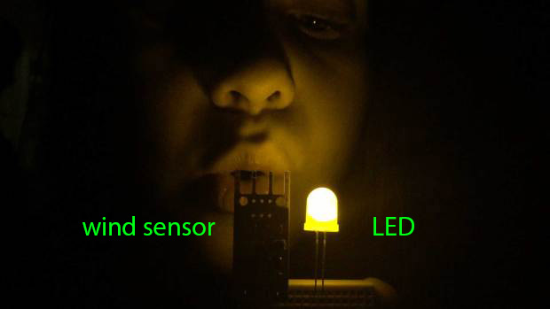
Here's what we do today:
- solder the sensor together
- wireup sensor and LED using breadboard + microcontroller
- write code to detect sensor input and turn LED on/off using Arduino IDE
- remove power from laptop and instead use a 9V battery
- minutiarize the setup by soldering onto a protoboard
Check if you have all components:
Grab a bag for your team (one bag per team, same team as your group projet).
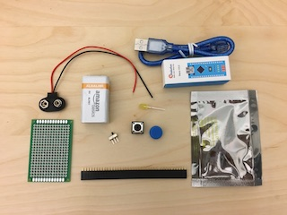
You should have in your new kit:
- LED
- button (top and bottom half)
- wind sensor
- 9V battery
- battery clip
- switch
- Arduino nano
- mini-usb cable
- protoboard
- header pins
In addition, you will need to use these from the kit you already had:
- Arduino Uno and cable
- various resistors
- breadboard
- cables
Breadboard
The breadboard has holes for plugging in components.
Certain rows and columns are electrically connected together.
Each column of 5 holes is connected internally.
If you insert one end of side of a component into one set of the holes in a column of 5, and then insert one side into a second set of holes across the gap, the pins will not be connected together.
If you were to rip the back off your breadboard (DO NOT DO...we ruined the one in the photo so you don't have to!) you could more clearly see which rows and columns are connected.
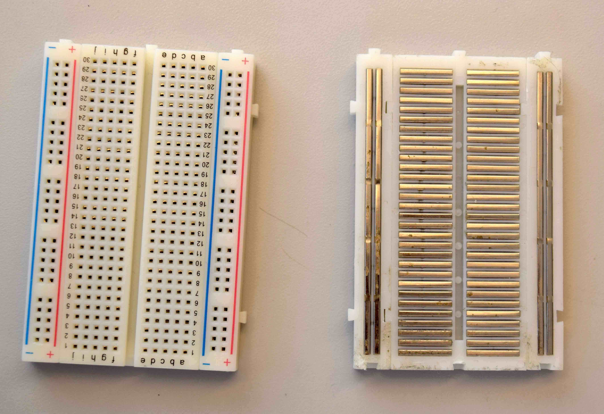
The back of a breadboard, revealing the metal connectors inside. Note how there are many short connectors (with five connecting holes), and only several longer connectors, often called "rails" or "busses" and which we'll use for power distribution.
There are good and bad ways to wire a breadboard, just like there are good and bad ways to write code. The general rule is to keep the wires short and sweet...avoid large loops.
When adding components, be careful not to short them! Here we have an LED with both terminals plugged into the same row. They are therefore electrically connected with each other. DO NOT DO THIS!
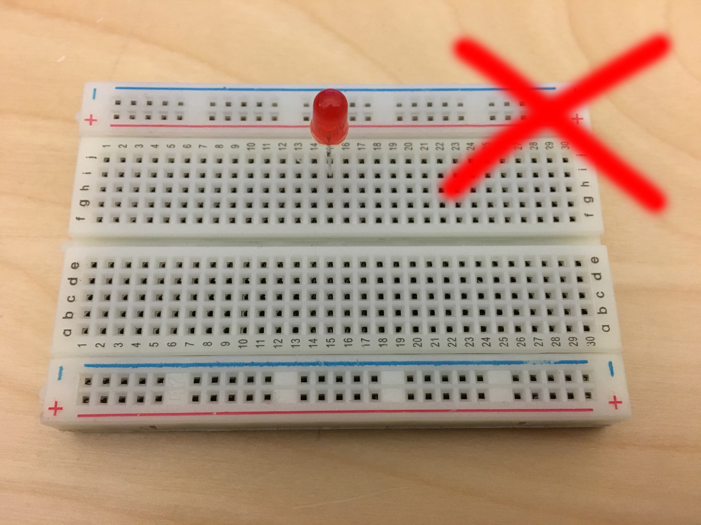
Instead, plug LEDs and other electrical components along the other access like this:
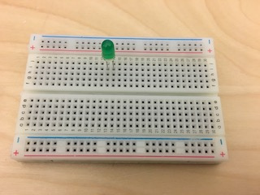
The long red and blue buses are traditionally used for power and ground. For example, if you were powering your devices with a 9V batter, you could plug it in as so:
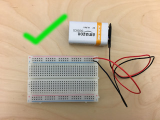
Note that you could also switch the two rails with each other, they are only 'wires' themselves, but plugging red into the blue rail would be visually confusing since they are color-coded.
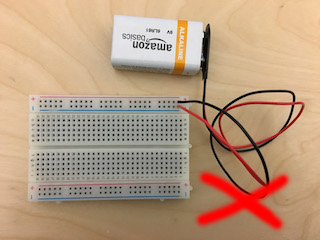
NEVER EVER EVER short your power and ground!!! It's okay here because neither the Arduino is connected nor the battery is plugged in, otherwise you would have to trash the Arduino after this.
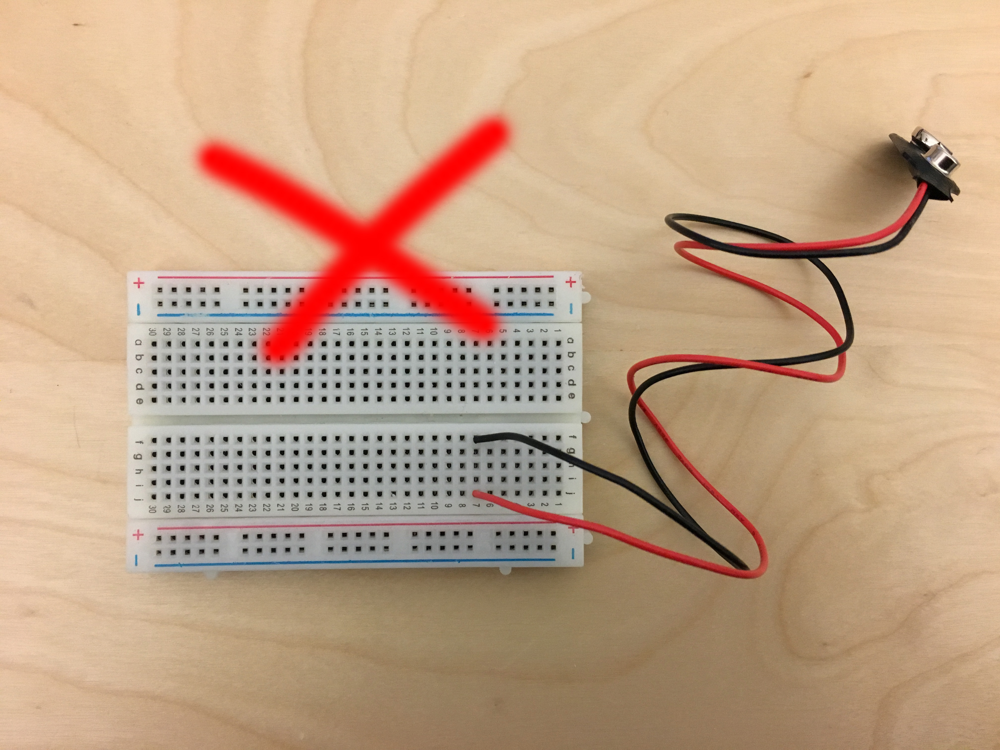
NEVER EVER EVER short your power and ground, even through a wire!!! It's okay here because neither the Arduino is connected nor the battery is plugged in, otherwise you would have to trash the Arduino after this.
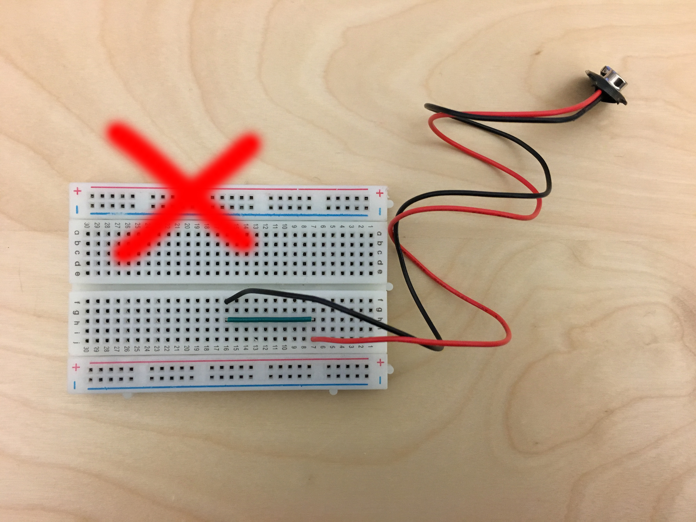
Connect Micro-Controller to Breadboard
Make sure nothing is plugged into your breadboard and your arduino is off (not plugged into your computer or any other power source).
As a general rule, never play with live wires.
Always remove all power sources before plugging and unplugging wires and other devices.
The micro-controller has a 3.3V output (+) and a 0V/GND (-, ground).
Use a jumper wire to connect the 3.3V to the red horizontal rail and another wire to connect the GND to the other horizontal rail as shown in the green checkmark image.
Even though this might not be necessary, it will make it easier to wire things up later.
Connect your LED
Before you can connect your LED, you also need a resistor.
The reason for this is that your micro-controller provides 3.3V (or 5V if you use the pin right next to the 3.3V on your Arduino), but the LEDs we gave you only need about 2V if it is yellow or red and 3V if it is white, green, or blue.
Furthermore, they don't want more than 20mA of current (or else they blow up), and contribute only a negligable resistance to the circuit. Therefore, in order to get the current down to 20mA, we'll have to calculate what resistor we will need.
Here's the math for the yellow/red LEDs:
The voltage going through the resistor will be 3.3V - 2V = 1.3V
V=I*R (voltage = current * resistance)
1.3V = 20mA * R
R = 65 Ohms
To be safe, you can use a larger resistor.
Probably anything 100 Ohms - 650 Ohms will work fine, though a large resistor will lead to a less bright LED since there will be less current.
To find the right resistor (they all have the color coded rings on them), you do the following:
Either use one of the color-charts as you see below:
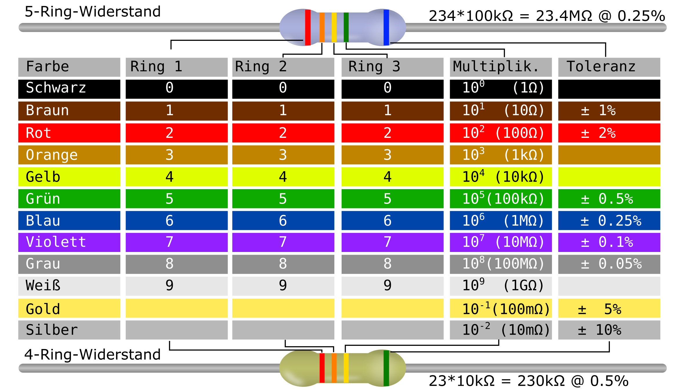
Or you can use a Resistor Color Code Calculate website that gives you the right resistor:
https://www.hobby-hour.com/electronics/resistorcalculator.php
Now that you have your LED and the resistor, you can wire up your LED.
Use the following wiring diagram.
Note that an LED has to be plugged in the right direction, otherwise it will blow and you can trash it!
The longer leg must be connected to the higher voltage.
Thus, it has to face towards the 3.3V since the resistor comes afterwards.
On the other hand, the resistor can be plugged in facing either way and on either side of the LED.
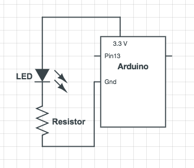
If you don't know how to read the this diagram, ask a TA to help you better understand them, you will need this again further along in the tutorial (and in the future for your project).
In the above setup, we connected the LED to 3.3V. This means, the LED will always be on.
To add computer control to this, i.e. being able to turn it on and off via code, we connect it to a pin. If the pin is set to high it will supply 3.3B and the LED is on, otherwise if the pin is set to low, the LED will remain off.
Build this:
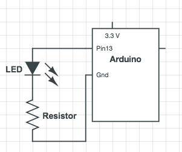
You should see your LED blink now when plugged into power (if the Arduino is still running your blink code that you uploaded as part of your homework).
Here's the blink code snippet and you can see it writes High/low to pin 13, which turns on/off the LED.
int led = 13;
// the setup routine runs once when you press reset:
void setup() {
// initialize the digital pin as an output.
pinMode(led, OUTPUT);
}
// the loop routine runs over and over again forever:
void loop() {
digitalWrite(led, HIGH); // turn the LED on (HIGH is the voltage level)
delay(1000); // wait for a second
digitalWrite(led, LOW); // turn the LED off by making the voltage LOW
delay(1000); // wait for a second
}
Add Button to your LED to turn it on/off
Next, add a button to your LED using this wiring chart.
We are going to read on pin 2 if the button is pressed or not and then turn the LED on/off on pin 13 based on the button's state.
Did you unplug your Arduino before you started wiring??? If not, please do. No live wiring or you might fry your micro-controller if you plug a wire wrongly.
Add the button by wiring this together. Use any resistor 1k-10k:
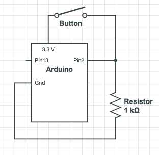
How does this work? Note that we will be using pin 2 only as an input pin, not an output pin. That means that depending on whether the button is pressed, it will read either a high voltage close to 3.3V or a low voltage close to 0V. Which does it read when the button is pressed? Which does it read when the button is not pressed? Ask a TA if you are confused!
If you wire up the button slightly differently, the answers to the above questions might change. Without having to do any re-wiring, think about what the readings on the pin would be if you instead wired the button like this:
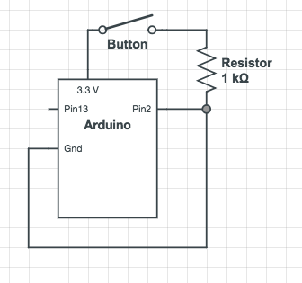
Which of the wirings above do you think are better? Why?
Again, if you aren't sure about these concept questions, ask a TA!
Write Arduino Code to turn LED on/off
Now, let's write our own code. To turn the LED on and off with the button!
The Arduino has a setup() function that is called exactly once on start.
The loop() function runs repeatedly until you shut the micro-controller off.
Before either of these functions, you can declare variables.
Your LED is wired on Pin 13 and button is wired to pin 2. Declare this at the top of your code by adding the following lines of code at the top.
const int buttonPin = 2;
const int ledPin = 13;
We also will declare a variable that will keep track of the button state, whether it is pressed or not.
int buttonState = 0;
In the setup function, we declare whether the pins are inputs or outputs.
pinMode(ledPin, OUTPUT);
pinMode(buttonPin, INPUT);
Lastly in the loop function we conditionally turn the LED on or off depending on whether the button is pressed.
buttonState = digitalRead(buttonPin);
if (buttonState == HIGH) {
// turn LED on:
digitalWrite(ledPin, HIGH);
}
else {
// turn LED off:
digitalWrite(ledPin, LOW);
}
If it doesn't work, you can try debugging with your serial monitor. The serial monitor is a great debugging tool, as it will give you live updates on the values being read and calculated on the arduino.
In the setup part of the code, add a line somewhere that initiates the serial monitor:
Serial.begin(9600);
Then after finding the button state in the loop, have the serial monitor print the state of the button:
Serial.println(buttonState);
While running the arduino, you can open the serial monitor by going to Tools --> Serial Monitor. You may need to change the baud rate to 9600 in the serial monitor (or change it in the setup to whatever the default you have is).
Solder your wind sensor
The wind sensor doesn't come with legs (aka: header pins) to plug it into the breadboard, so we need to solder some on it.
If you have soldered before and are confident in what you are doing, go ahead and grab a soldering iron and some solder thread! Otherwise, ask a TA to show you how to do it if you have never done it before.
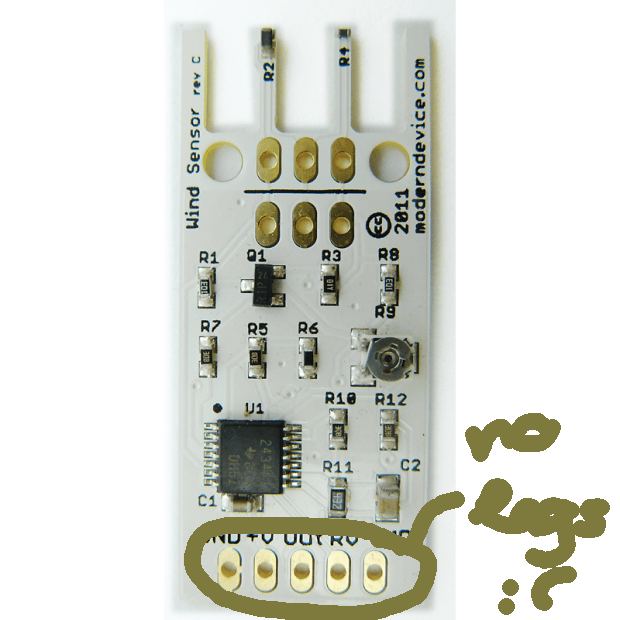 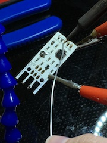
How does the wind sensor actually work?
Our wind sensor is actually what is called a “hot-wire” wind detector.
A wire warmed up by a little electricity will cool when air blows across it.
When the wire cools, its conductivity changes.
The other electronics on the board detect this change and turn it into values the Arduino can read.
Connect your wind sensor to the board
Once you have the header pins soldered on, connect the windsensor to your circuit using the following wiring diagram. Did you unplug your Arduino? No live wiring.
Note that the wind sensor requires a higher voltage to run. You should therefore hook it up to the Arduino's 5V supply.
Usually, when wiring up a sensor, you will need to wire up the ground and high voltage (in our case 5V) up for reference. In addition, you wire up some pins to do the reading. In the case of the button, our input was simply binary: either the button was on or it was off. For that sort of reading, we use a digital pin. The arduino also comes with analog pins that can read voltages on a scale. This is useful when a sensor provides an output with a gradient value. In this case, we are interested in the wind speed, which is on a continuous scale. Hence, we are using analog pins A0 and A1 as our inputs.
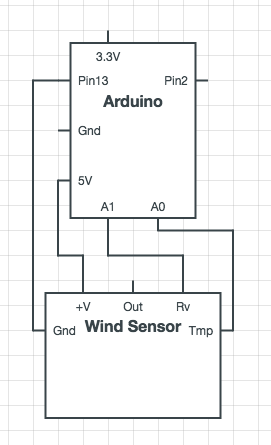
Add code for detecting blowing air onto the sensor
Download the code for the wind sensor here. Make sure you understand how it works. There are several conversions that are done in the loop. You do not need to understand the details of how those work.
If the light keeps going out or it fails to go out, you might need to calibrate the wind speed threshold. Look at the line that says if (WindSpeed_MPH > 20) and change the 20 to be bigger or smaller as necessary. It will be useful to use the serial monitor here to find an appropriate threshold.
Once you complete this, you should be able to blow the LED off and use the button to turn it back on.
Replace laptop power via USB cable with a 9V battery
Next, we want to free our setup from our laptop.
Once the code is uploaded on the Arduino, it constantly keeps running, so there is no need for the laptop.
The only reason we are still using the laptop is because it's supplying the energy to the micro-controller.
However, we can replace the power supply using a battery and battery connector.
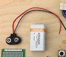
To use the battery, you can simply unplug the Arduino 3.3V and GND cables from the breadboard rails and instead use the battery cables and it should work without laptop power!
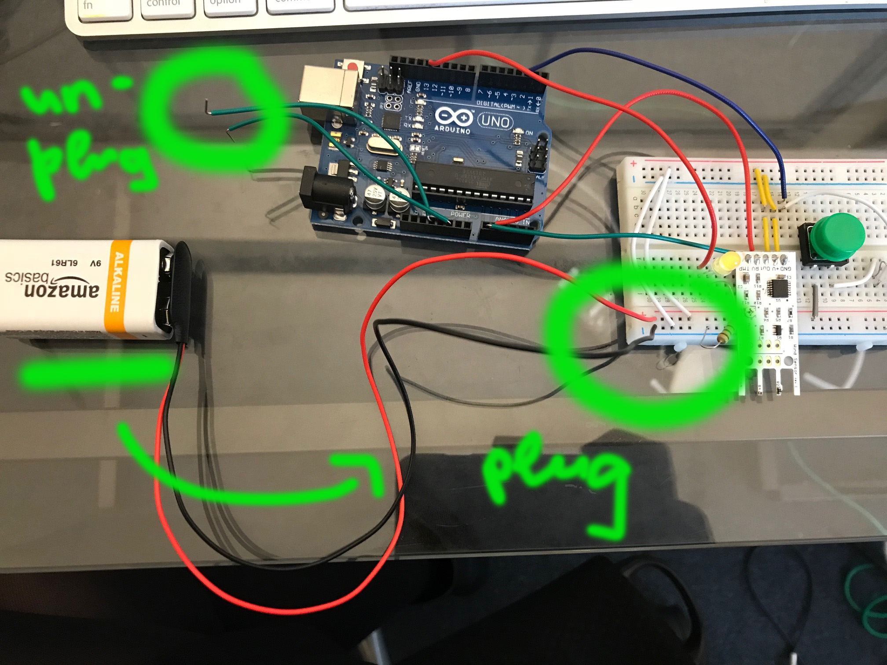
However, if we left everything as it is, your battery would be dead within a few hours.
Why? Because the Arduino keeps running its loop function all the time, i.e. as long as it has power. So to prevent your battery from draining you need to either (1) unplug the battery every time you are done with programming (not great), or (2) add a switch for turning it on/off.
Let's solder a switch to our batter pack wires. Remember not to have the battery plugged in while we do this!
How does the switch work?
The switch is basically a mechanism to interrupt e.g. your GND wire.
Imagine cutting your black GND wire into two halfs and then putting the switch in the middle.
If the switch is in one position, both ends of your black GND cable will be connected and your circuit is closed. If the switch is in another position, your black cable remains 'broken' and no current flows.
The switch has three pins as you can see here.
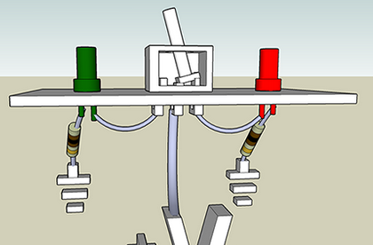 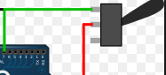
Let's solder the black wire on one of the outside pins of the switch (it doesn't matter which one). Since the switch is pretty small and there is not a lot space for soldering, lets put a bit of heat shrink on the wire that we can use to cover the wire from connecting to the neighbor pins!
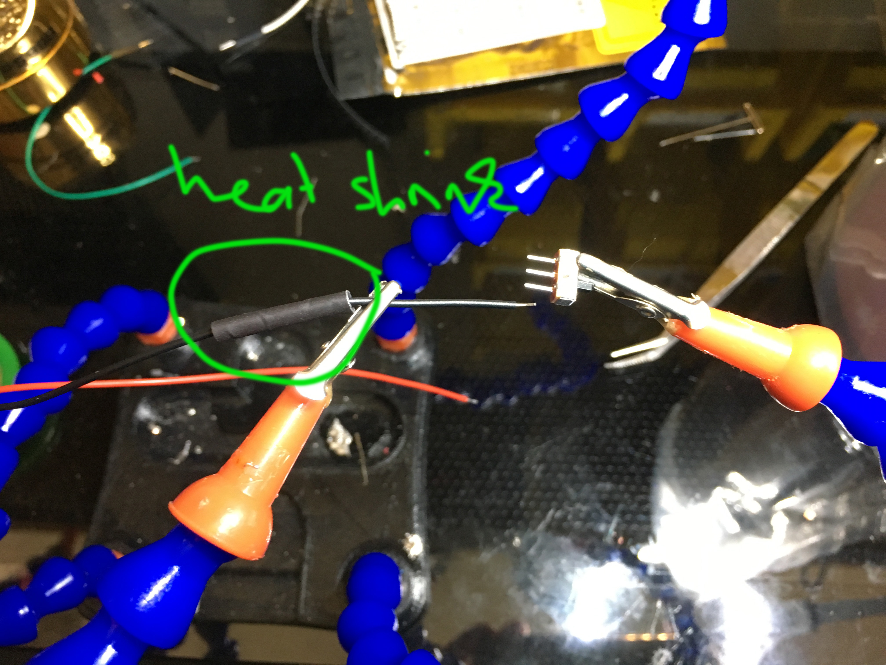
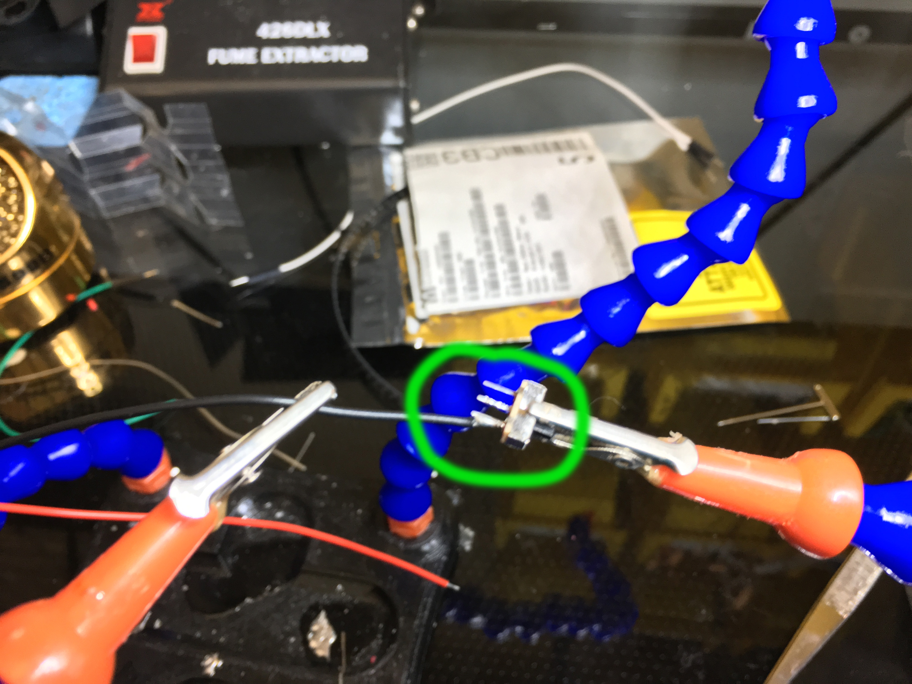
Now move your heatshrink over the soldered area.
Use your soldering iron or a heatgun (ask a TA) to apply heat gently, this will make it shrink and cover the wire.
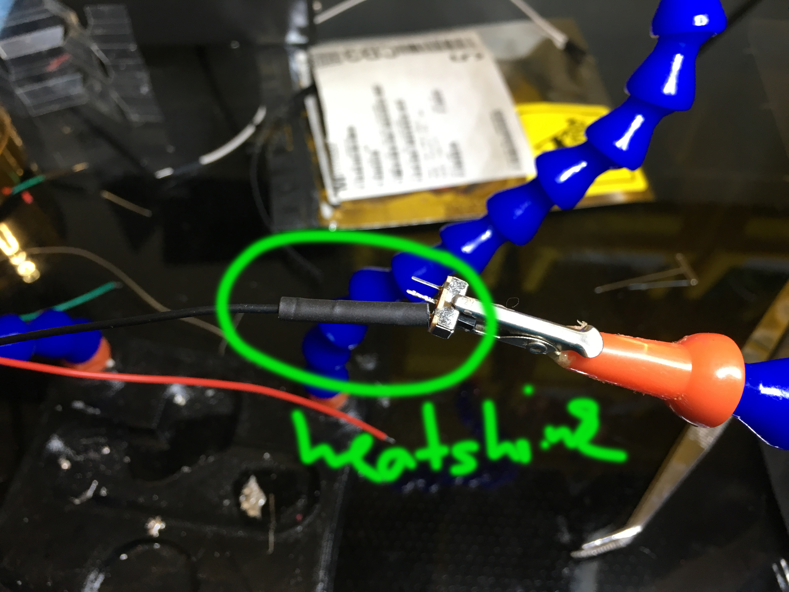
Now get yourself a second piece of black wire from one of the cable roles.

Solder it to the middle pin. (When you move the switch both the middle and outside pin will connect and your circuit is closed).
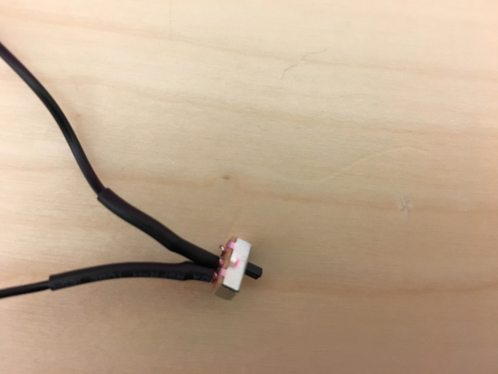
Finally, to avoid accidentally shorting your battery, you can cut off the third pin, as it is not necessary for our purpose.
Now plug the battery back into your circuit and test if the switch works:
Using the switch on the battery every time you are done with using the Arduino is important because even when the candle is out, your Arduino is still running. So remember to power it down completely with the switch (or by unplugging the battery) or you’ll run out of juice very soon.
Minituarizing your Setup: Planning it Out
The breadboard and Arduino Uno are pretty chunky and will be hard to integrate into a physical prototype.
We can make everything much smaller by using an Arduino Nano and a protoboard and solder everything together.
This will take some planning, and it is not particularly easy to undo a soldering job, so before continuing think about the following contraints (and if you are unsure read the detailed tutorial below):
// the setup routine runs once when you press reset:
void setup() {
// initialize the digital pin as an output.
pinMode(led, OUTPUT);
}
// the loop routine runs over and over again forever:
void loop() {
digitalWrite(led, HIGH); // turn the LED on (HIGH is the voltage level)
delay(1000); // wait for a second
digitalWrite(led, LOW); // turn the LED off by making the voltage LOW
delay(1000); // wait for a second
}
const int ledPin = 13;
pinMode(buttonPin, INPUT);
if (buttonState == HIGH) {
// turn LED on:
digitalWrite(ledPin, HIGH);
}
else {
// turn LED off:
digitalWrite(ledPin, LOW);
}
Take some detailed pictures of your breadboard now!
In a moment, you will one by one unplug the sensor / button / LED and cables from your breadboard and move them onto the protoboard.
It is a good idea to take a picture of your old setup in case you are wondering how things were connected.
Soldering the Header Pins for the Nano and Wind Sensor
Since the Arduino Nano and Wind Sensor do cost some money and we might want to use them for something else later, it would be good to be able to easily remove them and use them for something else (or swap them out if they stop working), we will solder on header pins to the protoboard for them.
Cut the row of header pins so that you have two pieces of the appropriate length for the Arduino nano. When cutting header pins, try to cut in the middle of the next pin that you no longer need. For example, if you need a row of 5, cut through the 6th pin. It is rather inevitable that you will have to "waste" a pin per cut you make.
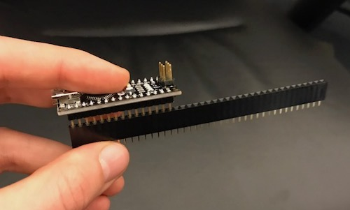
Next, cut one row of header pins for the wind sensor using the same method.
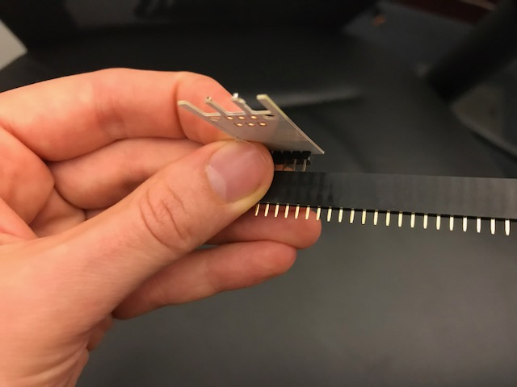
Plan the location of the arduino nano and the wind sensor.
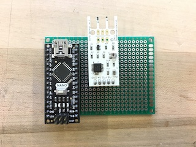
Flip the board over and solder the rails.
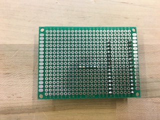
Now you should be able to remove and place back the arduino and wind sensor at will! But be careful when removing them about bending the pins.
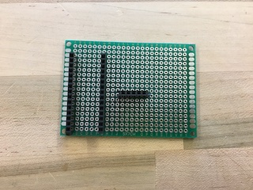
Soldering Everything Else
Here are the general instructions for soldering everything else to the board.
For the various smaller circuit components (leds, resistors, and button), you can insert the legs into the board, flip the board over, and solder them onto it.
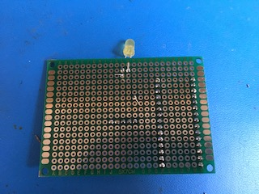
If you'd like to avoid having pokey bits, you can trim the wires after soldering them. However, remember that the LED has a long leg and a short leg! If you are going to trim the LED, be sure to remember which leg is which, or otherwise mark it somehow.
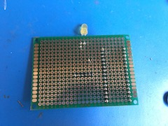
In addition to soldering the components on, you will also need to make connections. You can either do this by soldering on wires like this:
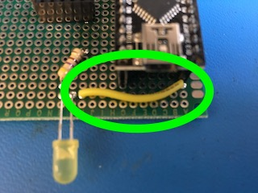
Or by creating solder bridges such as the one at the end of the green wire here:
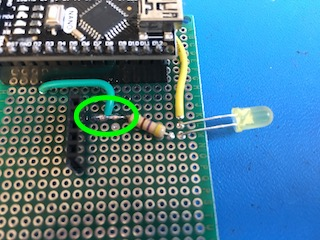
Note that if the solder you are using has lots of flux, it might be surprisingly difficult to make solder bridges. You can cheat by soldering on a stripped wire.
Changing Code to work with the Arduino Nano
You need to set the board from Arduino Uno to Arduino Nano in the Arduino IDE.
In case you moved some input / outputs to other pins, you need to update the pin numbers.
Debugging
After soldering everything together, does the wind sensor program work perfectly? Great! You can skip this section! Otherwise, here are some tips for finding bugs in your board:
Create a new housing
In one of our future labs, we will tell you about 3D modeling and you will be able to 3D print your own housing for the candle. Please store you parts for now and we will tell you more in a week or two.
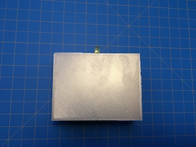
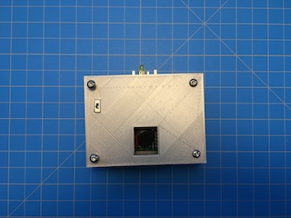
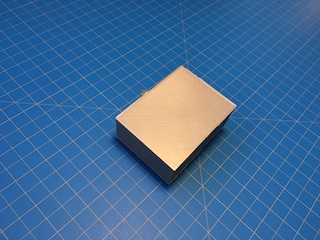